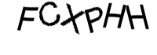
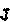
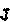

Decoding CAPTCHA's
Most people don’t know this but my honours thesis was about using a computer program to read text out of web images. My theory was that if you could get a high level of successful extraction you could use it as another source of data which could be used to improve search engine results. I was even quite successful in doing it, but never really followed my experiments up.
My honours advisor Dr Junbin Gao http://csusap.csu.edu.au/~jbgao/ had suggested the following writing my thesis I should write some form of article on what I had learnt. Well I finally got around to doing it. While what follows is not exactly what I was studying it is something I wish had existed when I started looking around.
Legal Stuff/Disclaimer.
I am posting this article solely for information and educational purposes. I do not condone the use or act of ethical or unethical "hacking" nor circumvention of copy protection etc... The use of this code for any unethical or illegal purposes is not condoned by myself nor any other person(s) mentioned in this article.

This work is licenced under a
Creative Commons Licence.
So as I mentioned essentially what I attempted to do was take standard images on the web, and extract the text out them as a
way of improving search results. Interestingly I based most of my research/ideas by looking at methods of cracking CAPTCHA's.
A CAPTCHA as you may well know is one of those annoying "Type in the letters you see in the image above" things you see on
many website signup pages or comment sections.
A CAPTCHA image is designed so that a human can read it without difficulty while a computer is unable to. This in practice has
never really worked with pretty much every CAPTCHA that is published on the web getting cracked within a matter of months.
Knowing this my theory was that since people can get a computer to read something that it shouldn’t be able to, then normal
images such as website logos should be much easier to break using the same methods.
I was actually surprisingly successful in my goal with over 60% successful recognition rates for most of the images I used in
my sample set. Rather high considering the variety of different images that are on the web.
What I did find however while doing my research was a lack of sample code or applications which show you how to crack
CAPTCHA's. While there are some excellent tutorials and many published papers on it they are very light on algorithms or
sample code. In fact I didn't find any beyond some non working PHP scripts and some Perl fragments which strung together a few
non related programs and gave some reasonable results when presented with very simple CAPTCHA’s. None of them helped me very
much. I found that what I needed was some detailed code with examples I could run and tweak and see how it worked. I think I
am just one of those people that can read the theory, and follow along, but without something to prod and poke I never really
understand it. Most of the papers and articles said they would not publish code due the potential for missuse. Personally I
think it is a waste of time since in reality building a CAPTCHA breaker is quite easy once you know how.
So because of the lack of examples, and the problems I had initially getting started, I thought I would put together this article with full
detailed explanations working code showing how to go about breaking a CAPTCHA.
Let’s get started.
Here is a list in order of things I am going to discuss.
Technology used
All of the sample code is written in Python 2.5 using the Python Image Library. It will probably work in Python 2.6 but 2.5 is
what I had installed. To get started just install Python then install the Python Image Library.
Install them in the above order and you should be ready to run the examples.
Prefix
I am going to hardcode a lot of the values in this example. I am not trying to create a general CAPTCHA solver, but one
specific to the examples given. This is just to keep the examples short and concise.
CAPTCHA’s, What are they Anyway?
A CAPTCHA is basically just an implementation of a one way function. This is a function where it is easy to take input and
compute the result, but difficult to take the result and compute the input. What is different about them though is that while
they are difficult for a computer to take the result and output the inputs, it should be easy for a human to do it. A CAPTCHA
can be thought of in simple terms as a "Are you a human?" test. Essentially they are implemented by showing an image which has some word or
letters embedded in it.
They are used for preventing automated spam on many online websites. An example can be found on the Windows Live ID signup
page
https://signup.live.com/signup.aspx?ru=http%3a%2f%2fmail.live.com%2f%3frru%3dinbox&wa=wsignin1.0&rpsnv=10&ct=1242258428&rver=5
.5.4177.0&wp=MBI&wreply=http:%2F%2Fmail.live.com%2Fdefault.aspx&lc=2057&id=64855&mkt=en-GB&bk=1242258418&rollrs=12&lic=1
You display the image, the human decodes the text in it and enters it into the form. A simple idea which seems like a
good solution to the problem of a computer coming along signing up for thousands of spam email accounts or posting thousands
of threads in your forum trying to sell viagra. The problem is that AI, in particular image recognition techniques have evolved and become very effective in certain areas.
OCR (Optical Character Recognition) is pretty accurate these days and can easily read printed text. The solution was
to add lines and colours and generally mess up the text in the image you are asking the human to decode to try and confuse the
program. Basically what you have here is an arms race, and like every other arms race arms generally beat armour. Defeating a
CAPTCHA which has been obscured is a little more difficult but still not impossible. Plus the image being generated cannot
be too crazy or the human will not be able to read them.

The above image is an example of the CAPTCHA we are going to decode. This is a live CAPTCHA posted on an actual website and not just a test image I have created.
It is a very simple CAPTCHA, consisting of text which is a uniform size
and colour against a white background with some noise (pixels, colours, lines) thrown in. You might think that such a
CAPTCHA is difficult to decode because of this noise, however I will show that it can easily be removed. This CAPTCHA while not very strong is a
good example of home coded CAPTCHA's which exist on the web.
How to identify text in images/How to extract text in images
Many methods exist for identifying where text lives in an image and extracting it. A simple Google search will list thousands
of articles which have new techniques and algorithms for identifying text. Examples include using image filters which blur the
image horizontally and look for darker areas (because the blur causes the text to be highlighted). Edge detection filters
which just leave the outline of text, pattern detection, colour extraction etc...
For the purposes of this example I am going to use colour extraction. The reason for this is that it is a simple technique
which I have had a lot of success in. It's the technique I used for my thesis which produced quite good results.
The algorithm I am going to use against our example CAPTCHA is known as multivalued image decomposition. Essentially it is
means is that we first build a histogram of colours in the image. This is done by taking all of the pixels, grouping them by
colour and counting each group. Looking at our example you can see that means there will be about three main colours which
will be quite common, either the background (white) the noise lines (grey) or the text (red).
Doing this in Python is very easy.
The following code will open an image, convert it to a GIF (makes things easier since it has 255 colours), and print its colour histogram.
from PIL import Image
im = Image.open("captcha.gif")
im = im.convert("P")
print im.histogram()
The output from this is the following.
[0, 0, 0, 0, 0, 0, 0, 0, 0, 0, 0, 0, 0, 0, 0, 0, 0, 0, 0, 0, 0, 0, 0, 0, 0, 0, 0
, 0, 0, 0, 0, 0, 0, 0, 0, 0, 0, 0, 0, 0, 0, 0, 0, 1, 1, 0, 0, 0, 0, 0, 0, 0, 0,
1, 0, 0, 2, 0, 0, 0, 0, 1, 0, 0, 0, 0, 0, 2, 1, 0, 0, 0, 0, 0, 0, 0, 0, 0, 0, 1,
0, 0, 0, 0, 1, 0, 0, 0, 0, 0, 0, 2, 1, 0, 0, 0, 2, 0, 0, 0, 0, 1, 0, 1, 1, 0, 0
, 1, 0, 2, 0, 0, 0, 0, 0, 0, 0, 0, 0, 0, 0, 1, 2, 0, 0, 0, 1, 2, 0, 1, 0, 0, 1,
0, 2, 0, 0, 1, 0, 0, 2, 0, 0, 0, 0, 0, 0, 0, 0, 1, 0, 1, 0, 1, 0, 3, 1, 3, 3, 0,
0, 0, 0, 0, 0, 1, 0, 3, 2, 132, 1, 1, 0, 0, 0, 1, 2, 0, 0, 0, 0, 0, 0, 0, 15, 0
, 1, 0, 1, 0, 0, 8, 1, 0, 0, 0, 0, 1, 6, 0, 2, 0, 0, 0, 0, 18, 1, 1, 1, 1, 1, 2,
365, 115, 0, 1, 0, 0, 0, 135, 186, 0, 0, 1, 0, 0, 0, 116, 3, 0, 0, 0, 0, 0, 21,
1, 1, 0, 0, 0, 2, 10, 2, 0, 0, 0, 0, 2, 10, 0, 0, 0, 0, 1, 0, 625]
This represents the pixel count of each of the 255 colours in the image. You can see that white is probably at the end (255)
since it has the biggest pixel count. Red (the text) is probably somewhere around number 200. To confirm you can just do this,
from PIL import Image
from operator import itemgetter
im = Image.open("captcha.gif")
im = im.convert("P")
his = im.histogram()
values = {}
for i in range(256):
values[i] = his[i]
for j,k in sorted(values.items(), key=itemgetter(1), reverse=True)[:10]:
print j,k
The output is,
255 625
212 365
220 186
219 135
169 132
227 116
213 115
234 21
205 18
184 15
The first column is the colour's id. The second is the number of pixels in the image of that colour.
This is the list of the 10 most common colours in the image. White as expected is the most common colour. Followed by what is probably gray and
then red.
I am just going to hardcode the values for our CAPTCHA for this example. I guessed red was the third most common colour which
means we want to keep pixel group 220. When I experimented I found that I also needed pixel group 227 which is pretty close to
220 so I am going to keep that as well. The code below opens the CAPTCHA, converts it to gif, makes a new image the same size
as the original with a white background, then runs through the first image looking for pixels of the colour we want. If it
finds them it marks the same pixel in the second image as black. We then save the new image.
from PIL import Image
im = Image.open("captcha.gif")
im = im.convert("P")
im2 = Image.new("P",im.size,255)
im = im.convert("P")
temp = {}
for x in range(im.size[1]):
for y in range(im.size[0]):
pix = im.getpixel((y,x))
temp[pix] = pix
if pix == 220 or pix == 227: # these are the numbers to get
im2.putpixel((y,x),0)
im2.save("output.gif")
What about images which have text in multiple colours I hear you say? Well this technique can still work. You just assume that
the most common colour is the background and keep the rest. Multi coloured text on a multi coloured background can still be
broken using this technique as well. You just do the above and then combine multiple images together if you know they have
text in them. Different multicoloured backgrounds for each letter which is multi coloured would beat this technique, but also
be totally illegible to users as well!
So at this point we have successfully extracted the text in the image. The next step is to identify if the image contains any
textual data. I am not going to post code on this since it will make things needlessly complicated but the technique is pretty
simple. Here is the algorithm,
Building Disjoint Sets of Pixels algorithm
for each binary image:
for each pixel in the binary image:
if the pixel is on:
if any pixel we have seen before is next to it:
add to the same set
else:
add to a new set
For our simple example I am going to take another route. Notice that each letter is separate to the next one? None of them are
joined. By taking horizontal slices of the image we can test where each image starts and finishes, and extract them into
separate images. By doing this we now have a collection of letters ready to recognise.
I’m not going to walk through this code. Its pretty much all of the above snippets, but it also slices through the new image
looking for letters and storing where each one is kept.
from PIL import Image
im = Image.open("captcha.gif")
im = im.convert("P")
im2 = Image.new("P",im.size,255)
im = im.convert("P")
temp = {}
for x in range(im.size[1]):
for y in range(im.size[0]):
pix = im.getpixel((y,x))
temp[pix] = pix
if pix == 220 or pix == 227: # these are the numbers to get
im2.putpixel((y,x),0)
# new code starts here
inletter = False
foundletter=False
start = 0
end = 0
letters = []
for y in range(im2.size[0]): # slice across
for x in range(im2.size[1]): # slice down
pix = im2.getpixel((y,x))
if pix != 255:
inletter = True
if foundletter == False and inletter == True:
foundletter = True
start = y
if foundletter == True and inletter == False:
foundletter = False
end = y
letters.append((start,end))
inletter=False
print letters
Using our input image the output of the above is,
[(6, 14), (15, 25), (27, 35), (37, 46), (48, 56), (57, 67)]
These are the positions horizontally along the image where each letter starts and stops.
AI and Vector Space Image Recognition
Image recognition can be considered pretty much the biggest success of modern AI and has even made it into all sorts of
commercial applications. An excellent example of this is post/zip codes. They are actually read automatically in many
countries because teaching a computer to recognise numbers is a fairly easy problem to solve. It may not seem like it now but,
image recognition is considered an AI problem, albeit one that is highly specialised.
Pretty much the first thing anyone who studies AI comes across is using a Neural Network as a method of reading characters.
Personally I never had any success with a neural network for identifying characters. I could usually get it to learn 3-4
characters but after that its accuracy dropped so low it may as well have been guessing randomly. Initially this caused a mild panic as
it was the last missing piece in my thesis! Thankfully some time before I had read a paper about Vector Space Search Engines and turned to it as an alternative method of
classifying data. In the end it turned out to be a better choice because,
- They don’t require extensive training iterations.
- They can’t become overtrained.
- You can add/remove incorrect data on the fly and see the effects
- They are easier to understand and program
- They provide graded results, so you can see the top X matches
- Can’t recognise something? Add it in and you can recognise instantly, even if it is totally different to something seen before
Of course its not all a free lunch. They can be much slower then a neural network when classifying, and since we know how they work they dont find their own way of solving the problem. This means that the nerual network can be more flexible when it comes
to identifying things since it makes up its own method. I still feel that the benefits outweigh these issues however.
Rather then explain how a vector space works I will point you in the direction of this PDF
http://la2600.org/talks/files/20040102/Vector_Space_Search_Engine_Theory.pdf which is the best introduction to the subject
that I have found.
I built my vector space image recogniser based on the above paper, and they are usually the first thing I try to code in whatever language I am learning at the time. Go read it them come back here once you have the gist of it.
Back already? Good. Now we need to code our vector space. Thankfully as I said before its not hard to write. Here it is,
Vector Space implementation class.
import math
class VectorCompare:
def magnitude(self,concordance):
total = 0
for word,count in concordance.iteritems():
total += count ** 2
return math.sqrt(total)
def relation(self,concordance1, concordance2):
relevance = 0
topvalue = 0
for word, count in concordance1.iteritems():
if concordance2.has_key(word):
topvalue += count * concordance2[word]
return topvalue / (self.magnitude(concordance1) * self.magnitude(concordance2))
Building a training set
So the next thing we need is a collection of images to compare our unknown images too. We need a training set. This set could
be used to train any sort of AI technique we are going to use (neural network etc...).
Using appropriate data for training can make or break your results. The better the dataset the more likely you are to succeed.
Since we are targeting a specific CAPTCHA, and since we already can extract the images from the CAPTCHA itself why not use
those images as our training set?
That’s what I did. I downloaded many of the generated CAPTCHA images and had my program break them up into letters. I then organised
my images into a collection (corpus). After a few iterations I had at least one example of every letter and number that the
CAPTCHA produced. Adding more examples to my corpus would increse accuracy but what I had was enough for proof of concept.
The code to produce the images is below.
Again I am not going to walk through this since it is essentially what we had before but is saving each of the letters to disk at the end.
from PIL import Image
import hashlib
import time
im = Image.open("captcha.gif")
im2 = Image.new("P",im.size,255)
im = im.convert("P")
temp = {}
print im.histogram()
for x in range(im.size[1]):
for y in range(im.size[0]):
pix = im.getpixel((y,x))
temp[pix] = pix
if pix == 220 or pix == 227: # these are the numbers to get
im2.putpixel((y,x),0)
inletter = False
foundletter=False
start = 0
end = 0
letters = []
for y in range(im2.size[0]): # slice across
for x in range(im2.size[1]): # slice down
pix = im2.getpixel((y,x))
if pix != 255:
inletter = True
if foundletter == False and inletter == True:
foundletter = True
start = y
if foundletter == True and inletter == False:
foundletter = False
end = y
letters.append((start,end))
inletter=False
# New code is here. We just extract each image and save it to disk with
# what is hopefully a unique name
count = 0
for letter in letters:
m = hashlib.md5()
im3 = im2.crop(( letter[0] , 0, letter[1],im2.size[1] ))
m.update("%s%s"%(time.time(),count))
im3.save("./%s.gif"%(m.hexdigest()))
count += 1
Here is the ouput from the above code when run against our example CAPTCHA image.
How you store these images is up to you, but I just stuck each unique letter or number in a subfolder with the same name as the letter or number it was holding.
Putting it all together
The final step. We have the text extractor, letter extractor, recognition technique and a training set.
We pull in the new CAPTCHA image, extract the text, extract the letters and then compare them to our training set to work out
what letter it is, then print what we think the letter is. You can get the final program with training data and some CAPTCHA’s
to attempt to break below.
You can download the code/trainingset/images using this link,
captcha.zip
This just loads the training set so we can compare it.
def buildvector(im):
d1 = {}
count = 0
for i in im.getdata():
d1[count] = i
count += 1
return d1
v = VectorCompare()
iconset =
['0','1','2','3','4','5','6','7','8','9','0','a','b','c','d','e','f','g','h','i','j','k','l','m','n','o','p','q','r','s','t','
u','v','w','x','y','z']
imageset = []
for letter in iconset:
for img in os.listdir('./iconset/%s/'%(letter)):
temp = []
if img != "Thumbs.db":
temp.append(buildvector(Image.open("./iconset/%s/%s"%(letter,img))))
imageset.append({letter:temp})
The below is where the magic happens. Right after we identify where each letter is we jump straight into checking using our
vector space and training set. We then sort the results and print them
count = 0
for letter in letters:
m = hashlib.md5()
im3 = im2.crop(( letter[0] , 0, letter[1],im2.size[1] ))
guess = []
for image in imageset:
for x,y in image.iteritems():
if len(y) != 0:
guess.append( ( v.relation(y[0],buildvector(im3)),x) )
guess.sort(reverse=True)
print "",guess[0]
count += 1
Results and Conclusion
Now we have everything put together lets run it,
Input file, "captcha.gif"
Expected output 7s9t9j
python crack.py
(0.96376811594202894, '7')
(0.96234028545977002, 's')
(0.9286884286888929, '9')
(0.98350370609844473, 't')
(0.96751165072506273, '9')
(0.96989711688772628, 'j')
The first number is the degree of certainty we have when identifying the letter. This is on a scale of 0 (no confidence) to 1 (very high confidence). The second part is what letter we belive the image to contain.
In fact running it against the sample CAPTCHA images we find that we can successfully recognise about 22% of the sample
CAPTCHA’s.
This is just the above crack.py script modified to run over each of the files in the examples directory which contains example CAPTCHA's
python crack_test.py
Correct Guesses - 11.0
Wrong Guesses - 37.0
Percentage Correct - 22.9166666667
Percentage Wrong - 77.0833333333
However even with these issues we can break this CAPTCHA about 22% of the time. This can then be considered cracked since the
computer can just churn through the CAPTCHA’s solving many hundreds before a human can solve even one.
Running this code on a Core 2 Duo E6550 gives the following runtime.
real 0m5.750s
user 0m0.015s
sys 0m0.000s
Since there are 48 examples CAPTCHA's in the directory we can work out it takes on average about 0.12 seconds to crack each CAPTCHA. With 5 sucessful
cracks per second we can perform about 432,000 cracks per day, with 95,040 sucessful attempts. Simply running another instance of the program
will double these numbers.
So there it is. A full guide to breaking CATPCHA's which hopefully will be used for more good then evil. I honeslty belive that while someone could come along and do some damage using this code, to really do anything dangerous you need to understand it and modify it quite a lot. To those who are getting ready to flame me on this remember that these techniques are not difficult to learn and anyone with the intent of breaking your CAPTCHA will do it, either programmatically or by tricking or paying people to do it for them. Perhaps by seeing how easy it is you will consider alternate methods of protecting your webforms.
Like this? Visit my website and leave a comment, http://www.boyter.org/ or email me, bboyte01@gmail.com
 ,
,
 ,
,
 ,
,
 ,
,

,
,
